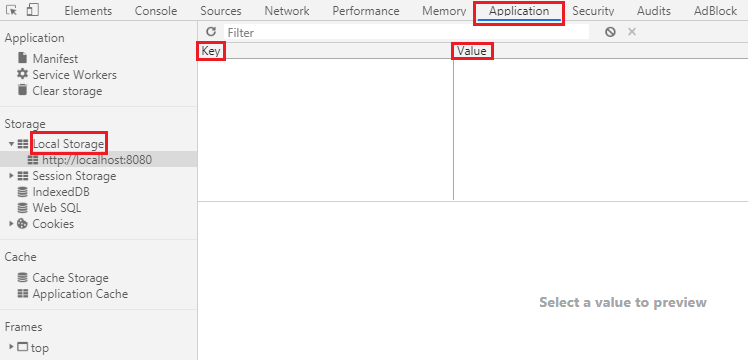

JavaScript - localStorage
Web storage 為 HTML 5 問世後提供的新技術，提供比 cookie (每條 cookie 的儲存空間為 4K) 更大 (localStorage 為 5M) 更安全的本地端儲存空間，也不會影響到網頁效能
Web Storage
Web storage 物件分為以下兩種，兩種物件的唯一差異是 “生命週期”，所以以下都已 localStorage 來做介紹
window.localStorage
儲存到這裡的資料會 “永久” 保存於本地端，除非使用者主動使用JavaScript語法 或 “網頁瀏覽器功能” 來刪除window.sessionStorage
保存資料於頁面 “尚未關閉” 或使用 “還原” 時，但在頁面關閉時清空儲存在內的所有資料
localStorage 基本操作
locarStorage 裡的 key 與 value
開啟開發人員工具，我們可以從裡面的 Application 找到 localStorage，點開 localStorage，會看到兩個欄位 Key 與 Value，在沒有任何動作前，兩個欄位是空的

Key
Key是localStorage物件的屬性，也是存入這筆資料的 “名稱”Value
而 Value 是 Key 屬性的值，也是存入這筆資料的 “內容”，特別要注意的是，Key 的型態都是 字串 string
localStorage 操作方法
localStorage.setItem('Key', 'Value')存入透過這個方法可以將資料存入
localStoragelocalStorage.getItem('Value')取出透過這個方法可以取出
localStorage中指定屬性的值localStorage.removeItem('Key')刪除透過這個方法可以刪除
localStorage中指定的屬性localStorage.key()取得屬性透過這個方法可以取得指定順序的屬性
key，此順序也是從0開始localStorage.clear()清除全部屬性這個方法會清除
localStorage中所有屬性key
JSON 資料編譯
為什麼我們需要編譯資料 ?
當我們使用 setItem 將資料儲存在本地端資料庫時，會發現所有儲存的資料 value 都被轉換成 “字串”，原因是 Storage 只會儲存字串的格式，所以會將所有存入的資料使用 toString() 方法強行轉換成字串 ; 如果將物件強行轉換成字串，就會得到 [object, Object]
1 | var string = 'testString'; |
編譯資料的方式
在這裡 JSON 提供了兩種方法來轉換資料的型別
JSON.stringify()將資料轉為
JSON格式的字串JSON.parse()將資料由
JSON格式字串轉回原來的內容與型別
同樣的資料我們在存入時使用 stringify() 將資料轉成 JSON 格式字串，取出時使用 parse() 轉回原來的資料型別
1 | localStorage.setItem('item1', JSON.stringify(string)); |
return 回傳數值、中斷 function ，不會執行之後的程式碼
HTML 5 中的 data-* 屬性
在製作網頁時，如果可以自己新增屬性，為 HTML tag 做上記號，就能更靈活的操作網頁。但為了避免大家隨意添加、命名自己需要的屬性，HTML 5 就多了一個 data-* 屬性，制定了一個統一的規則，其中的米字號 * 是一個可以自定義的名稱
在 * 自定義名稱時，不能使用 英文大寫，可以是任何字串，如下範例
1 | <ul class="list"> |
在 JS 中選取 data-*
如果是綁定事件來尋找自定義的 data-* 屬性，都會儲存在 target 中的 dataset 物件，物件的屬性就是自定義的 *，屬性的值就是自定義時給定的值了。延續上方的範例
1 | var list = document.querySelector('.list li'); |
dataset 與 array 的運用
先將陣列
array中的資料帶入HTML點擊時再透過
dataset取得對應的資料
在 CSS 中選取 data-*
既然是自定義的屬性 Attribute，黨然也可以在 CSS 中被選取
1 | <article class="article" data-content="Hello Everyone"> |
如果要在 <article> 中顯示 data-content 的內容
1 | atricle::before { |
如果要選取指定的屬性或是屬性的值，也可以搭配 CSS 選擇棄來使用
1 | article img[data-size="m"]{...} |
toDoList
- 取得輸入框的內容加入到
data陣列中 - 將
data陣列轉換成 “字串” 儲存到localStorage - 取出
localStorage的資料並還原其形態，印出到網頁中 - 透過
dataset刪除點選的指定資料
參考資料
重新認識 JavaScript
邁向 JavaScript 勇者之路
JavaScript 入門篇 - 學徒的試煉
JS30-Day15-LocalStorage
什麼是 HTML 5 中的資料屬性（data-* attribute )